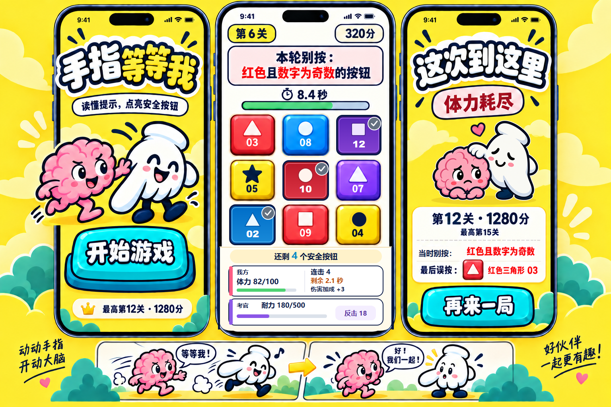

融合版三屏 · v12 可用性修订
首页 → 复杂 3×3 局内 → 结算。依据运营评审，将局内底栏拆成我方与考官两组，补出连击剩余时间和伤害加成，让已按按钮明显下沉，并统一黄色按钮图形、明确结算规则措辞。首页角色、结算双人组和下方分镜逐像素保留自 v11 造型基准。查看可编辑的 UI 修订图层与说明。


- A：明黄与浅色局内
- B：纸片感搭档
- C：积木按钮结构
- D：限于故事分镜
局内短屏适配 · v13
按运营复验意见，单独排布 320×568 的长规则与完整状态，并检查 360×640、390×844。这里是实际 CSS 尺寸渲染，保持深蓝轮廓、明黄与积木按钮语言；局内省去装饰角色，优先保证规则、数字和可点面积。打开可切换尺寸的页面 · 评审记录。
结算角色：保留双人表演
统一规则：角色以深蓝主轮廓定形，外侧加一圈明显比深蓝轮廓细的白边；小尺寸角色随比例收细。白边只围角色整体，不描脸部内线，也不在两位角色接触处插入白线。肢体验收规则 · 生图与合成工作流 · 查看清洁底板。